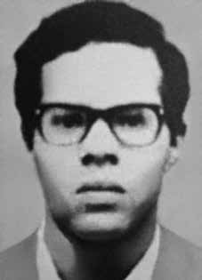

Luiz
Carlos
de Almeida
CIRCUNSTÂNCIAS DA MORTE
Na tarde do dia 13 ou 14 de setembro de 1973 – poucos dias após o golpe de estado que derrubou o presidente Allende – encontravam-se no apartamento de Luiz Carlos três casais: Luiz Carlos e sua companheira Linovita Nogueira Magalhães, que chegara do Brasil na véspera do golpe; João Antonio Arnoud Herédia e Maria Lucia Wendel de Cerqueira Leite, que para lá se dirigiram depois do golpe por entender que o local era mais seguro que a própria residência, perto do Palácio La Moneda; Carmen Fischer, que residia no Chile desde março daquele ano, e seu marido Luiz Carlos de Almeida Vieira que chegara alguns dias antes para encontrá-la. Por volta das 18h, quando João Herédia havia saído um instante, militares chilenos – não se sabe de que Força – invadiram o apartamento e ordenaram aos presentes que ficassem com as mãos contra a parede enquanto revistaram o apartamento, levando consigo livros, jornais e documentos políticos, envoltos em lençóis arrancados das camas. Luiz Carlos de Almeida e Luiz Carlos de Almeida Vieira foram levados para a delegacia do bairro, onde foram somente identificados e aguardaram em uma cela por algumas horas, até serem levados para o Estádio Nacional, transformado naqueles dias em centro de detenção. O relato que se segue é do próprio Luiz Carlos Vieira: O estádio parecia estar iluminado para uma noite de futebol. Ainda não sabíamos que o haviam transformado em uma enorme sala de tortura, humilhação e morte. Passamos por uma fileira de soldados. Logo seguimos por um longo corredor cujas paredes eram formadas por corpos humanos, os braços estendidos para o ar, os rostos voltados para as paredes de pedra do corredor do estádio. Chegamos ao que parecia ter sido um dos vestuários, agora transformado em sala de tortura. Um militante uruguaio acabava de ser castigado. Um oficial veio recolher nossos documentos de identificação. A sessão de tortura iniciou-se. O interrogatório girava em torno de um suposto esconderijo de armas, o qual era completamente desconhecido para nós. Diante da resposta negativa, o oficial decidiu que, juntamente com o militante uruguaio, devíamos deixar o estádio. Todas essas viagens foram feitas em uma camioneta, onde íamos acompanhados de dois ou três soldados armados, sempre seguidos de perto por um caminhão com mais soldados. A última viagem levou-nos às margens do rio Mapocho. Os soldados mostravam-se nervosos e agiam com violência. Já não havia dúvida sobre qual seria o nosso destino. Luiz Carlos tentou argumentar com os soldados, mostrando-lhes o absurdo e o inumano de tal situação. Mas naquele momento já não regia nenhuma lei, nem a dos homens nem a de Deus. O uruguaio encaminhou-se para a beira do rio e jogou-se nas águas, sendo imediatamente metralhado por um soldado. O oficial mandou Luiz Carlos fazer o mesmo. Um soldado seguiuo e disparou demoradamente. Depois foi a minha vez. Das três balas que me atingiram, uma pegou de raspão na cabeça, fazendo-me perder os sentidos por algum momento. Quando recuperei a consciência, senti-me levado pela leve correnteza do rio, ouvi as vozes dos soldados, vi as luzes dos caminhões refletirem-se nas águas do rio, iluminando os corpos inertes de meus companheiros. Era o único sobrevivente. Luiz Carlos Vieira, ferido, foi resgatado por religiosos e acolhido na Embaixada da Suécia, de onde partiu para aquele país, no qual fixou residência. O corpo de Luiz Carlos de Almeida teria sido visto por vizinhos, às margens do Mapocho, no dia seguinte ao fuzilamento. Não há registro de sua prisão, que não foi oficializada, nem de seu óbito. Não se sabe que destino tiveram seus restos mortais. Em 1993, o deputado Nilmário Miranda, que presidia a Comissão Externa sobre Desaparecidos da Câmara Federal, denunciou o desaparecimento de Luiz Carlos à Corporação Nacional de Reparação e Reconciliação (CNRR), que deu seguimento, no Chile, aos trabalhos da Comissão de Verdade e Reconciliação (Comissão Rettig). A Comissão Externa esforçou-se por reunir informações e obter depoimentos de testemunhas do seqüestro de Luiz Carlos para subsidiar a apreciação do caso pela CNRR, que em 10/12/93 reconheceu oficialmente sua condição de detido-desaparecido, nos seguintes termos: “Considerando os antecedentes reunidos e a investigação realizada por esta Corporação, o Conselho Superior chegou à convicção de que Luiz Carlos de Almeida foi detido e desaparecido por agentes do Estado enquanto era mantido privado de liberdade. Por tal razão, declarou-o vítima de violação de direitos humanos”. Em dezembro de 2012 foi instaurado perante a Corte de Apelações de Santiago, pelo Ministério do Interior do Chile (Programa Continuación de la Ley n°19.123), o processo criminal Rol no 368-2012, distribuído ao 34o Juzgado del Crimen, para investigar e apurar responsabilidades no sequestro e homicídio qualificados de Luiz Carlos de Almeida. A CNV teve acesso aos autos judiciais, colaborou com os dados de que dispunha e transmitiu cópia dos autos ao Ministério Público Federal, para facilitar o acompanhamento e o assessoramento cabível aos responsáveis pelo processo no Chile. A Comissão Estadual da Verdade do Estado de São Paulo realizou no dia 29/8/2013 audiência pública sobre o caso de Luiz Carlos Almeida, mas nada de novo logrou apurar.
On the afternoon of September 13 or 14, 1973 – a few days after the coup d'état that overthrew President Allende – three couples were in Luiz Carlos' apartment: Luiz Carlos and his companion Linovita Nogueira Magalhães, who had arrived from Brazil the day before the coup; João Antonio Arnoud Herédia and Maria Lucia Wendel de Cerqueira Leite, who went there after the coup because they understood that the place was safer than their own residence, close to La Moneda Palace; Carmen Fischer, who had lived in Chile since March of that year, and her husband Luiz Carlos de Almeida Vieira, who had arrived a few days earlier to meet her. Around 6 pm, when João Herédia had left for a moment, Chilean soldiers – it is not known which force – invaded the apartment and ordered those present to keep their hands against the wall while they searched the apartment, taking with them books, newspapers and political documents, wrapped in sheets ripped from the beds. Luiz Carlos de Almeida and Luiz Carlos de Almeida Vieira were taken to the neighborhood police station, where they were only identified and waited in a cell for a few hours, until they were taken to the National Stadium, transformed in those days into a detention center. The following report is from Luiz Carlos Vieira himself: The stadium seemed to be lit up for a night of football. We still didn't know that they had turned it into a huge room of torture, humiliation and death. We passed a line of soldiers. We soon walked down a long corridor whose walls were made up of human bodies, their arms outstretched in the air, their faces turned towards the stone walls of the stadium corridor. We arrived at what appeared to have been one of the dressing rooms, now transformed into a torture room. A Uruguayan militant had just been punished. An officer came to collect our identification documents. The torture session began. The interrogation revolved around a supposed weapons cache, which was completely unknown to us. Faced with the negative response, the officer decided that, together with the Uruguayan activist, we should leave the stadium. All of these trips were made in a truck, where we were accompanied by two or three armed soldiers, always closely followed by a truck with more soldiers. The last trip took us to the banks of the Mapocho River. The soldiers were nervous and acted violently. There was no longer any doubt about what our destiny would be. Luiz Carlos tried to reason with the soldiers, showing them the absurdity and inhumanity of such a situation. But at that moment no law no longer governed, neither that of men nor that of God. The Uruguayan went to the riverbank and threw himself into the water, and was immediately machine-gunned by a soldier. The officer ordered Luiz Carlos to do the same. A soldier followed him and fired slowly. Then it was my turn. Of the three bullets that hit me, one grazed my head, making me lose consciousness for a moment. When I regained consciousness, I felt carried by the gentle current of the river, I heard the voices of the soldiers, I saw the lights of the trucks reflected in the waters of the river, illuminating the inert bodies of my companions. He was the only survivor. Luiz Carlos Vieira, injured, was rescued by clergy and welcomed at the Swedish Embassy, from where he left for that country, where he took up residence. Luiz Carlos de Almeida's body was reportedly seen by neighbors, on the banks of Mapocho, the day after the shooting. There is no record of his arrest, which was not made official, nor of his death. It is not known what fate his remains suffered. In 1993, deputy Nilmário Miranda, who chaired the External Commission on Disappeared Persons of the Federal Chamber, reported the disappearance of Luiz Carlos to the National Corporation for Reparation and Reconciliation (CNRR), which continued, in Chile, the work of the Truth and Reconciliation Commission (Rettig Commission). The External Commission made an effort to gather information and obtain testimonies from witnesses to the kidnapping of Luiz Carlos to support the assessment of the case by the CNRR, which on 12/10/93 officially recognized his status as detained-disappeared, in the following terms: “Considering the antecedents gathered and the investigation carried out by this Corporation, the Superior Council came to the conviction that Luiz Carlos de Almeida was detained and disappeared by State agents while he was kept deprived of liberty. For this reason, he declared him a victim of human rights violations.” In December 2012, the Chilean Ministry of the Interior (Programa Continuación de la Ley n°19.123) filed before the Court of Appeals of Santiago, criminal case Rol no. The CNV had access to the court records, collaborated with the data at its disposal and transmitted a copy of the files to the Federal Public Ministry, to facilitate monitoring and appropriate advice to those responsible for the process in Chile. The State Truth Commission of the State of São Paulo held a public hearing on the case of Luiz Carlos Almeida on 8/29/2013, but nothing new was discovered.
En la tarde del 13 o 14 de septiembre de 1973 –pocos días después del golpe de Estado que derrocó al presidente Allende– tres parejas se encontraban en el apartamento de Luiz Carlos: Luiz Carlos y su compañera Linovita Nogueira Magalhães, que habían llegado de Brasil el día antes del golpe; João Antonio Arnoud Herédia y Maria Lucia Wendel de Cerqueira Leite, quienes acudieron allí después del golpe porque entendieron que el lugar era más seguro que su propia residencia, cercana al Palacio de La Moneda; Carmen Fischer, que residía en Chile desde marzo de ese año, y su esposo Luiz Carlos de Almeida Vieira, quien había llegado unos días antes para recibirla. Hacia las seis de la tarde, cuando João Herédia se había marchado por un momento, soldados chilenos –no se sabe qué fuerza– invadieron el apartamento y ordenaron a los presentes que mantuvieran las manos contra la pared mientras registraban el apartamento, llevándose libros, periódicos y documentos políticos, envueltos en sábanas arrancadas de las camas. Luiz Carlos de Almeida y Luiz Carlos de Almeida Vieira fueron trasladados a la comisaría vecinal, donde sólo fueron identificados y esperaron en una celda durante algunas horas, hasta ser trasladados al Estadio Nacional, transformado en esos días en un centro de detención. El siguiente informe es del propio Luiz Carlos Vieira: El estadio parecía iluminado para una noche de fútbol. Todavía no sabíamos que lo habían convertido en una enorme sala de tortura, humillación y muerte. Pasamos una fila de soldados. Pronto caminamos por un largo pasillo cuyas paredes estaban formadas por cuerpos humanos, con los brazos extendidos en el aire y los rostros vueltos hacia las paredes de piedra del pasillo del estadio. Llegamos a lo que parecía haber sido uno de los camerinos, ahora transformado en una sala de tortura. Un militante uruguayo acababa de ser castigado. Un oficial vino a recoger nuestros documentos de identificación. Comenzó la sesión de tortura. El interrogatorio giraba en torno a un supuesto alijo de armas, que desconocíamos por completo. Ante la respuesta negativa, el oficial decidió que, junto con el activista uruguayo, debíamos abandonar el estadio. Todos estos viajes los hacíamos en un camión, donde íbamos acompañados por dos o tres militares armados, siempre seguidos de cerca por un camión con más militares. El último viaje nos llevó a orillas del río Mapocho. Los soldados estaban nerviosos y actuaron violentamente. Ya no había dudas sobre cuál sería nuestro destino. Luiz Carlos intentó razonar con los soldados, mostrándoles lo absurdo e inhumano de tal situación. Pero en ese momento ya no gobernaba ninguna ley, ni la de los hombres ni la de Dios. El uruguayo se dirigió a la orilla del río y se arrojó al agua, siendo inmediatamente ametrallado por un soldado. El oficial ordenó a Luiz Carlos que hiciera lo mismo. Un soldado lo siguió y disparó lentamente. Luego fue mi turno. De las tres balas que me impactaron, una me rozó la cabeza haciéndome perder el conocimiento por un momento. Cuando recuperé la conciencia, me sentí arrastrado por la suave corriente del río, escuché las voces de los soldados, vi las luces de los camiones reflejadas en las aguas del río, iluminando los cuerpos inertes de mis compañeros. Él fue el único superviviente. Luiz Carlos Vieira, herido, fue rescatado por clérigos y acogido en la Embajada de Suecia, desde donde partió hacia ese país, donde fijó su residencia. Según los informes, el cuerpo de Luiz Carlos de Almeida fue visto por vecinos, en las orillas del Mapocho, el día después del tiroteo. No hay constancia de su detención, que no fue oficializada, ni de su muerte. Se desconoce qué suerte corrieron sus restos. En 1993, el diputado Nilmário Miranda, quien presidía la Comisión Externa sobre Personas Desaparecidas de la Cámara Federal, denunció la desaparición de Luiz Carlos ante la Corporación Nacional de Reparación y Reconciliación (CNRR), que continuó, en Chile, el trabajo de la Comisión de la Verdad y Reconciliación (Comisión Rettig). La Comisión Externa hizo un esfuerzo por recabar información y obtener testimonios de testigos del secuestro de Luiz Carlos para sustentar la valoración del caso por parte de la CNRR, que el 10/12/93 reconoció oficialmente su condición de detenido desaparecido, en los siguientes términos: “Considerando los antecedentes recabados y la investigación realizada por esta Corporación, el Consejo Superior llegó a la convicción de que Luiz Carlos de Almeida fue detenido y desaparecido por agentes del Estado mientras se le mantenía privado de libertad por lo que lo declaró víctima de violaciones a los derechos humanos”. En diciembre de 2012, el Ministerio del Interior de Chile (Programa Continuación de la Ley n°19.123) presentó ante la Corte de Apelaciones de Santiago, la causa penal Rol no. La CNV tuvo acceso a los expedientes judiciales, colaboró con los datos de que disponía y transmitió copia de los expedientes al Ministerio Público Federal, para facilitar el seguimiento y asesoramiento adecuado a los responsables del proceso en Chile. La Comisión Estatal de la Verdad del Estado de São Paulo realizó una audiencia pública sobre el caso de Luiz Carlos Almeida el 29/08/2013, pero no se descubrió nada nuevo.